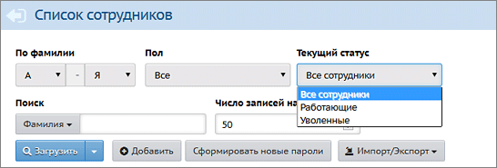

Если какой-либо сотрудник уже не работает в ОО, то можно исключить его из списка доступных преподавателей для предмета, классных руководителей и т.п. Для этого следует оформить увольнение сотрудника в системе.
Полномочия для увольнения/приёма на работу сотрудников имеет пользователь с правом доступа Редактировать все сведения о сотрудниках. Каждый сотрудник имеет текущий статус - «Работающий» или «Уволенный»:

Кнопки «Уволить» и «Удалить»
В сведениях о сотруднике есть две кнопки «Уволить» и «Удалить».
| · | Кнопка «Удалить» предназначена для двух случаев:
|
| а) если сотрудник был введён ошибочно;
|
| б) если сотрудник работал в предыдущих учебных годах, и вам нужно удалить всю информацию о сотруднике начиная с текущего учебного года. (Информация об этом сотруднике в прошлых учебных годах останется.)
|
| · | Кнопка «Уволить» предназначена для случая, когда в текущем учебном году сотрудник является классным руководителем, или преподавателем предмета, или замещает другого преподавателя в расписании. После этого сотрудник останется связанным с текущим учебным годом, но будет помечен как уволенный (см. ниже список ограничений).
|
Чтобы кнопки «Уволить» и «Удалить» были активны, у вас должны быть права доступа Редактировать все сведения о сотрудниках и Удалять пользователей из системы.
Ограничения для уволенного сотрудника
Для уволенного сотрудника в системе введены следующие ограничения:
| · | Экран «Планирование -> Предметы»: в списке преподавателей, которых можно привязать к предмету, не выводятся уволенные.
|
| · | Экран «Обучение -> Классы»: при назначении классного руководителя, уволенные не показываются в выпадающем списке.
|
| · | Экран «Обучение -> Предметы»: при назначении учителя-предметника, уволенные не показываются в выпадающем списке.
|
| · | Уволенный сотрудник не может войти в систему.
|
| · | Сведения об уволенном сотруднике не будут скопированы в следующий учебный год.
|
Приём уволенного сотрудника обратно
Принять сотрудника на работу может только пользователь, имеющий право доступа «Редактировать все сведения о сотрудниках». Для этого нужно открыть экран «Список сотрудников», выбрать Текущий статус = «Уволенные», щёлкнуть в ФИО нужного сотрудника.
В сведениях о выбранном сотруднике будет доступна кнопка «Принять», нажатие которой восстановит сотрудника.
Корректировка списка сотрудников при переходе на следующий учебный год
Чтобы список сотрудников стал корректным в следующем учебном году, нужно выполнять следующие рекомендации:
1. ВАЖНО! Перед тем как нажата кнопка «Формирование следующего года»:
| В текущем учебном году нужно просмотреть список сотрудников и оформить увольнение для тех, кто уже не работает в школе. Уволенные сотрудники не будут скопированы в следующий год.
|
2. После того как нажата кнопка «Формирование следующего года»:
| Добавление сотрудников необходимо проводить в текущем году! При этом сотрудник появится и в текущем, и в будущем (новом) годах.
|
| Если же добавить сотрудника на вкладке будущего (нового) учебного года, то он окажется только в будущем (новом) году, а в текущем году его не будет. В случае если вы ошиблись и нужно чтобы сотрудник оказался в текущем году - то сначала удалите его из будущего года, затем добавьте в текущий год.
|
|
|
| Если вы хотите удалить сотрудника, чтобы он вообще не фигурировал в новом учебном году – то нужно:
|
| 1) | убедиться, что в новом учебном году он не является классным руководителем, учителем-предметником, или замещающим в расписании;
|
| 2) | воспользоваться кнопкой «Удалить» (не «Уволить»!) в личной карточке такого сотрудника.
|
| Если после этого понадобится восстановить такого удалённого сотрудника в новом году – то его можно найти в списке с текущим статусом «Уволенный» и снова принять на работу.
|